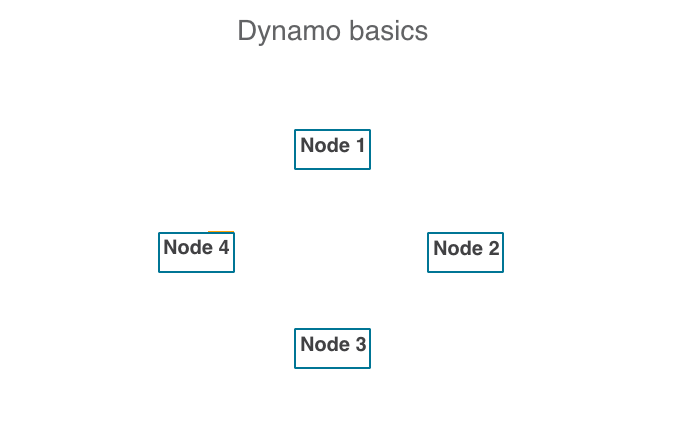
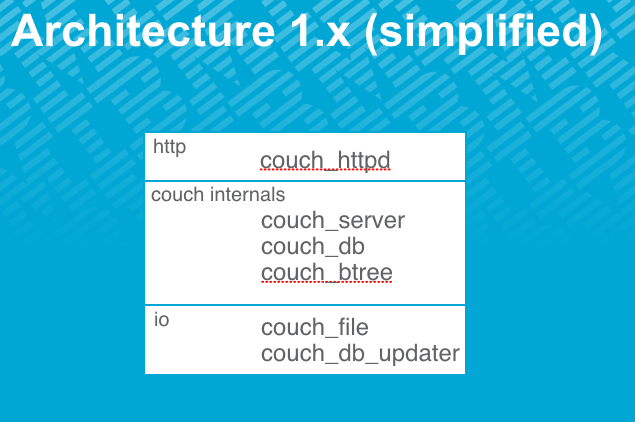
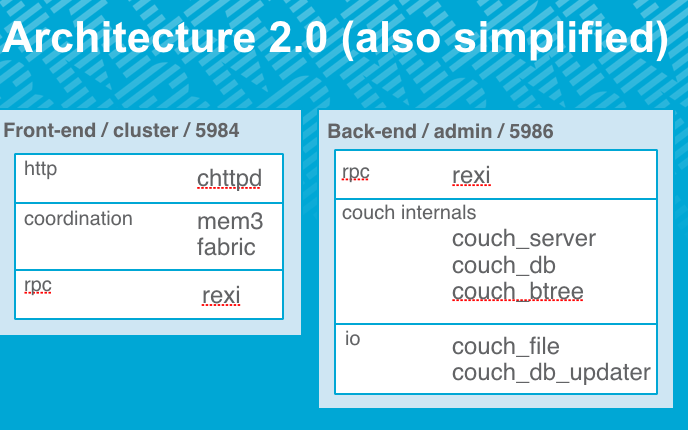
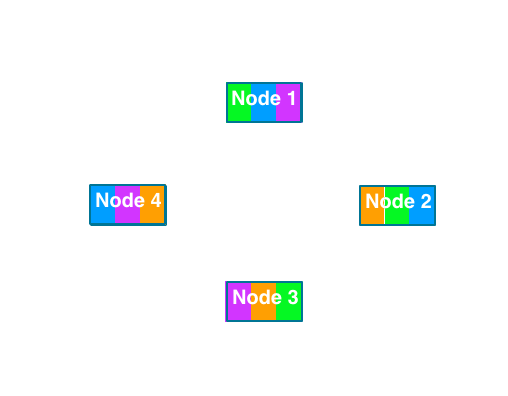

CouchDB 2.0
The Awkward Bits
#apache #couchdb #devops #couchdb2.0
This blogpost is an adaptation of the talk given at ApacheCon:Big Data Europe Sept 2015
My name is Mike Wallace and I'm a distributed systems engineer. I've been working with CouchDB since 2010, committing since 2013, and working on the Cloudant Database-as-a-Service platform (based on Apache CouchDB) since 2013. In 2014 IBM bought Cloudant... and now I work for IBM.
So, why am I here talking about the awkward bits?
Let's take a step back and look at the definition of awkward.
define awk·ward
This is pretty much all software, right? I mean, sure everything works ok most of the time, but I can't think of a single piece of software which hasn't, at least once, caused difficulty, been hard to deal with, caused uneasy embarrassment or inconvenience.
As operators (or in my case, a recovering operator) we know this to be true because we have lived through the problems that the awkward bits in software create. They've paged us at 3am, they've disrupted social occasions, they've been the triggering factor in family disputes.... but we've still managed them one way or another. SLAs were eventually restored, and ultimately, we've survived. That's great right?
And as a result we better understand the edges and the limitations of the systems we operate, and that makes us better operators.
But why do we have to wait until things start going wrong to learn about these things?
Wouldn't it be great if you could go to the product page for the latest awesome cloud thing that was going to solve all your problems, and
instead of seeing something like this:
"Elasticsearch clusters are resilient - they will detect new or failed nodes, and reorganize and rebalance data automatically, to ensure that your data is safe and accessible."
We'd see something like this:
"Elasticsearch loses data even when the partitions are total. You don't need a bridge node to make replicas diverge."
And instead of seeing this:
"Enhanced features ensure data is always available and durable throughout any situation."
We'd see things like this:
"Unbounded conflicting revisions of a document can increase write latency for all documents on a shard until those conflicts are resolved."
Ok, so this is never going to go on the product page. But what if there was another product page, just for us? Where the people who are actually going to be operating a system can learn about how the system might cause them trouble, and learn about strategies for managing that.*
Wouldn't it be great if we could live in that world?
And that's pretty much why I'm here today. I want to share a few things about CouchDB 2.0 that are awkward - partly so we can learn, but also to help foster an environment where we're happy to shout about the limitations of our systems, because we know that doing so will make our own, and everyone's lives easier.
History is complicated, and it's easy to skew things by what you include or don't include, so in the interests of providing enough context for this section is very, very abridged:
In the beginning there was CouchDB. Then there was CouchBase, which used CouchDB under the hood (maybe it still does?) for its CouchBase Server product, although CouchBase server is a different thing altogether. There was also Cloudant who added dynamo-style clustering to create two forks of CouchDB - a private one, used to back their Database-as-a-Service platform, and a public one, BigCouch (a bit like the private fork but less-well maintained).
Meanwhile, CouchDB marches on, happily independent of business and politics. Mostly.
Then Cloudant realises that maintaining two downstream forks of an open source project is maybe not the best idea so make the decision to deprecate BigCouch and donate the bulk of their internal fork to Apache CouchDB.
This took longer than expected...
...but landed on master in February 2014.
Then, some things happened.
(todo: irreverant gif of some kind...)
Now it's 2015 and 2.0 will be shipping real soon now.
So... CouchDB 2.0 is CouchDB + (most of) Cloudant + rcouch + various other extra goodies. (TODO - make a summary slide here)
So, most people are probably familiar with Amazon's Dynamo paper, but let's review the basics.
We have a cluster of nodes. No single node has a special role - all nodes do the same kinds of things.

The key space of a database (primary index) is partitioned across multiple shards and these shards are distributed across the cluster nodes.
External requests can be received by any node - that node then becomes the co-ordinating node for that request.
The co-ordinating node routes requests to the nodes that have the data required to fulfil the request - these become the worker nodes (for the request).
Nodes respond to the co-ordinator which then responds externally.
An internal anti-entropy mechanism keeps each copy of a shard range in sync in the event of write failures at the request level.


This was a pain because it used to require manual creation of shard maps as JSON documents, which was error prone and time consuming. Not a problem for Cloudant because Cloudant used chef, but would've been very awkward for CouchDB 2.0.
Fortunately Jan Lehnardt and co made this: couchdb-setup, which provides endpoints for configuraging clusters. And these are used by the dashboard and command line tools (i.e., nmo).
(Yay!)
Operations used to take all the available IO, and interactive requests couldn't compete, resulting in significantly incresed latencies
No automatic compaction has been fixed!
Pagination is still awkward but query sorta helps.
No CommonJS available in MapReduce functions has been fixed!
(Plus more awkward bits that have been fixed!)
Compaction is essentially writing out a new btree to a new file which we then flip to once complete.
Why is this awkward? Compaction is currently a shard operation, not a DB operation. If you liked compacting databases manually, there is no endpoint anymore.
What do we mean by this? Remember that CouchDB 2.0 is, when used in a cluster, a dynamo implementation. This means a DB at the cluster level (accessed via HTTP, traditionally on port 5984) is split into a number of shard ranges. Each shard range is actually a CouchDB database accessible via a different port (5986, the admin port). Doc IDs are hashed to find which shard they live on. Each node can only hold a single copy of a shard range for any DB. Reads and writes are coordinated by the node that receives the request (co-ordinating node), and you can decide how many copies need to be read/written to comprise a successful request. There's also some form of internal anti-entropy which in our case is the CouchDB replication protocol running within the distributed erlang rather than over HTTP. And some way of tracking conflicts, which CouchDB already provides.

So, any operation that needs to concern a cluster-level DB needs to have logic for co-ordinating that operation across the shards. That doesn't exist for compaction. Caveat: It nearly does, but view compaction isn't supported so the endpoint isn't there yet.
So if your operations model involved regular compaction of a database then you will need to either rethink it, or write a script to trigger the compactions at the shard level (and then open-source it please!).
Alternatively, use the compaction daemon and just let nodes manage their own compactions.
PROTIP: Compaction cannot be triggered for a whole database. You need to either script the compaction of each shard of a DB, or let each node run the compaction daemon.
Like compaction, purging is now a per-shard operation. This doesn't sound too bad - we can just direct the purge to the appropriate shard, right?
Let's step back to CouchDB's document model. Each document is actually a tree of document revisions. When we delete a document we add a revision which tells us the document is deleted. Because that deletion has to propagate for eventual consistency. This means you can never really get rid of data. Compaction will get rid of document bodies, but ids will remain.
Hence purging. This is essentially removing branches of the document tree. This is completely evil from an MVCC point of view because the DB containing that document is now inconsistent with its replicas. It is therefore essential that an identical set of purges complete successfully on all replicas to avoid either: 1. Unresolvable inconsistency for ongoing replications (including internal replication), and 2. The purged revisions being repopulated by a replication that has started from before the update_seq of the purged revision.
Co-ordinating this in a distributed system where partial failure is common is a pretty tricky problem, so it is instead deferred to the operator level with a big USE AT YOUR OWN RISK SERIOUSLY DON'T DO IT UNLESS YOU REALLY HAVE TO warning.
So, what's the advice?
PROTIP: Purging, like white lines, don't do it!
Prefer replicating to a new DB using a validate_doc_update function to filter out whatever you don't want.
That's not always practical. So if you do do it, ideally stop all writes to the database being purged. And double check your work. And check it again.
Two-step (actually six). Not atomic.
On each node:
Create shard map.
Create shard file.
So, what do we mean by this?
Remember when we were talking about cluster-level databases and their shards. Shards are just CouchDB databases, so creating the shard file is creating an empty CouchDB DB. The shard map is a json document which lives in a special DB on each node (the _dbs DB) which maps shard ranges to nodes and nodes to shard ranges. It is cached and used by the cluster membership layer to direct requests from co-ordinating nodes so the relevant data can be found/updated.
Will wait for all live nodes to respond before responding.
So, it tries to be atomic.
What happens if a node is down such that shard placement cannot be satisfied?
You get an HTTP 202 (accepted). Because your request for an N=3 database was accepted, the database was created on the live nodes, and will be propagated to the third node eventually.
How does this happen? Remember that a shard map is a regular CouchDB document stored in the _dbs DB local to each node? Internal replication keeps the _dbs DB on each node in sync with the other nodes, so the third node comes back online and the shard map propagates over. Then the actual shard data propagates over too.
So although it's not atomic, things work out ok. The shard map is the canonical source of truth and it is replicated across all the nodes (eventually). If the create shard files operation fails then the system will create them anyway from the shard map. If the shard files get created but the shard map doesn't then it's a total failure and there are some 4KB files that will never do anything.
Well that doesn't seem too bad right?
Wrong.
Imagine if you will a network partition. On one side you have two nodes and you create a database. On the other side you have the other node. You look for the database and it isn't there and because you're clever you programmed your client to create the database if it is missing. Now you start writing data to both sides of the partition.
What happens when the partition heals?
If a database already exists and is partitioned, the shards will be updated via internal replication and conflicts will be generated and a deterministic "winner" will be chosen for each conflict so that life can continue. Obviously the conflicts would need to be properly resolved.
But here, we have two different shard maps! So the shard maps themselves conflict. And one of them wins, and one of them doesn't. So what happens to the data written to shards in the losing map?
It's gone!
But not really.
You can recover it.
But it's a pain.
Now, let's talk about timeouts. If a create DB operation is taking a long time on one node, the operation is going to wait a timeout and then return an error.
Fine right?
Well, sort of. The database was still created.
And it will replicate to the failing node eventually.
Which is still fine, kind of?
Well... not really. Returning an error but creating the database is misleading at best. This really needs to be either an atomic operation or something that can partially complete and then guaranteed to eventually complete after the request.
So, what can we do to improve CouchDB here? We could decide to be CP for this operation and use some co-ordination mechanism, so that creating a DB either fails or succeeds.
Or...
We could be more flexible about the binding of data to nodes. (check riak/couchbase etc). If a node is unavailble then the data lives on a different node with a note regarding its final destination.
This is tricky because fixed shard maps.
So... in summary there are some valid reasons for DB creation being what it is. Firstly, accepting a partial write and propagating it to all nodes eventually. Secondly, simple implemntation, easier to reason about.
Downsides more due to the shard map implementation rather than anything else, though the 500 on timeout is an obvious bug.
So... until some fairly intensive rewriting happens:
PROTIPS:
1. Don't be too clever with your client code when creating databases.
2. Treat HTTP 500 errors with suspicion.
3. Try and steer away from application models that require creating a lot of databases (not always easy/possible).
Also, contribute to CouchDB and make this better!
This is probably my favourite bit of awkwardness because I was so surprised by the behaviour, and you could do some really interesting work around this area.
Let's start by going back to fault tolerance. Dynamo gives us the N, Q, R and W parameters and we can vary those to achieve different degrees of durability and throughput.
N = number of replicas.
Q = number of range partitions.
R = number of copies returned before a read request is considered successful
W = number of acknowledged writes before a write request is considered successful
Typically people choose N=3, R=2, W=2 (we'll ignore Q for now). You can try and use these parameters to fake a CP data store by ensuring W+R>N and this will appear to work, but you should be aware that you are getting no consistency guarantee. You are specifying the minimum desired reads/writes, but the underlying system will not be doing anything to preserve consistency should those values not be met. If you ask for two writes and only one is written, it won't get rolled back, and any subsequent reads are not guaranteed to either include or not include that value. It's still AP!
Now we've established that, let's talk about some failure scenarios.
Scenario: Simple three node cluster, one node is down.
Q: You make a write with W=3. What happens?
A: You get an HTTP 202 (accepted) response. The write has landed on two nodes, we can't roll that back, but we couldn't meet your request so we can't give you a 201.
Q: You make a read with R=3. What happens?
A: You get an HTTP 200 response. The co-ordinating node gets a response from two of the nodes, the RPC to the third node fails, and the result is returned. There isn't really a read-equivalent of HTTP 202, so... yeah.
We could do a bit better here with custom response headers, but it's sorta ok. You can see how your R+W>N really doesn't buy you consistency - and that's ok too, we're not a consistent data store, even though most of the time you can pretend it is and probably get away with it.
Scenario: Simple three node cluster, one node is impaired. It reports itself as up but RPC calls are timing out.
Q: You make a write with W=3. What happens?
A: The co-ordinating node gets two acks and waits the duration of fabric/request_timeout (default 60 seconds) before giving up and returning an HTTP 202 accepted. This is ok, though suboptimal - if you're monitoring your write latencies (and of course you are, right?) then they're going to be elevated by a few orders of magnitude. Every request is going to be waiting that timeout, no matter how long that node is impaired.
Q: You make a read with R=3. What happens?
A: The co-ordinating node gets two results and waits for the duration of fabric/request_timeout before giving up and then... throws the values away and returns an HTTP 500 internal server error.
What, you were expecting a value to be returned?
Other pathological things here are that we've got a node which is obviously unhealthy and we're continuing to throw requests at it. There's no mechanism to force other nodes to back off, or to allow other nodes to vote it out of the cluster. If it says it's up, then it will always be considered up, regardless of how obviously impaired it is.
Reality check: In two years of operations at Cloudant I've seen a few tens of cases where an impaired node had a significant impact on request latency in a cluster. These cases were usually on the same couple of clusters and were partly a factor of workload and sometimes infrastructure provider. The point is, this probably won't happen to you (as long as you look after your cluster nodes), but if it does, you'll be glad you knew about it first.
So, IMO, we can do some work here to make CouchDB behave better in the presence of impaired nodes. There is plenty of prior art to draw from - looking at Cassandra for example, where nodes monitor the health of other nodes and will stop directing requests to struggling nodes, or VoltDB where nodes will vote impaired nodes out of the cluster. We can learn from other systems and make it better.
In the meantime... don't bother with W=N or R=N. It isn't really buying you anything and it is dramatically reducing your application's tolerance to impaired nodes.
Not that R + W > N gets rid of the problem, because there'll be that time one node is in maintenance mode because it's re-syncing all the shards and another node suddenly experiences an increase in RPC latencies...
Also, monitor your request latencies. Even if you're monitoring node health directly (which of course you are), there are always problems subtle enough to sneak through all your node metrics and only be noticeable at the request level.
Check for fabric_worker_timeouts in the logs. If you're seeing a lot of these pointing to one node, chances are that's the source of your problems.
Consider lowering the value of fabric/request_timeout to reduce the latency impact.
So, we've spent the last 30 minutes or so looking at some pretty awkward things and we're probably feeling mixed emotions at this point. Maybe you're feeling mildly amused, because it's always fun to poke systems and make them fail. Maybe you're just feeling a bit sad because you thought that CouchDB was perfect.
Maybe, just maybe, you're feeling less confident in Apache CouchDB?
Well... I'm not here to tell you how to feel, so instead let's review what we have learned today....
Review
There are some interesting areas in CouchDB where contributions could be made - and a great community to help you do it.
There's no doubt these things are awkward. Some of them are a consequence of the design of the system - available-under-partition-tolerant systems are awkward by nature because they appear consistent under normal conditions but in reality they require extra work in the application layer. Some of them are silly bugs which we should just fix. Some of them are problems that are broader in scope and will take some co-ordinated effort to resolve.
So how are you feeling now? Even less confident? Are you thinking "You know what, Cassandra / VoltDB / HBase / Riak have already solved these problems so I'll just use one of them?".
Well... let's remind ourselves of one thing:
All software is awkward.
What we've learned today are the things in CouchDB 2.0 that bring new awkwardness (as defined by one person - me). This is an interesting picture and very relevant, and in fact the premise of the talk. But it's not the complete picture because it's missing two things:
The awesome bits of CouchDB.
The awkward bits of Cassandra / VoltDB / HBase / Riak
I'm not qualified to talk about the awkward bits of other DBs (arguably I'm not really qualified to talk about the awkward bits of CouchDB - my contributions are reasonably minor). And I don't have time to talk about the awesome bits, so I'm just going to list them here:
So... I started out saying we should be shouting about the awkward bits and finished up reiterating the good bits. Does this mean my premise was wrong? That talking about the limitations of your system is perhaps a Bad Thing(tm)?
No. It just means we need a balance - and that's what I hope this talk has been able to do.
And finally...
Go and try CouchDB 2.0 (developer preview)! It's on master and you can get a dev cluster up and running with ./configure && make && dev/run.